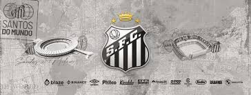

Home | Histótia do Santos | loja
Histira breve do santos

O Santos Futebol Clube foi fundado em 14 de abril de 1912 por três esportistas de Santos, São Paulo. O clube é conhecido por ter revelado jogadores famosos como Pelé, Robinho, Neymar e Paulo Henrique Ganso. Fundação Francisco Raymundo Marques, Mário Ferraz de Campos e Argemiro de Souza Júnior fundaram o clube Edmundo Jorge de Araújo sugeriu o nome Santos Sizino Patusca, o primeiro presidente do clube, escolheu as cores iniciais, azul e branco, com fios dourados Títulos Bicampeonato Mundial em 1962 e 1963 Campeonato Paulista em 1935, 1955, 1956 e 1958 8 Campeonatos Brasileiros em 1961, 1962, 1963, 1964, 1965, 1968, 2002 e 2004 2 Copas Intercontinentais em 1962 e 1963 3 CONMEBOL Libertadores em 1962, 1963 e 2011 1 Recopa Sul-Americana em 2012 1 Copa CONMEBOL em 1998 Equipe mais famosa A equipe mais famosa do Santos foi a da década de 1960, liderada por Pelé O Santos foi o primeiro time brasileiro a marcar 10 mil gols
Brasil João Paulo 16 M Brasil Thaciano 41 M Brasil Mateus Xavier 2 Z Brasil Zé Ivaldo 21 V Brasil Diego Pituca 44 LD Brasil JP Chermont 3 Z Brasil João Basso 22 A Argentina Álvaro Barreal 45 A Brasil Rafael Freitas 4 Z Brasil Gil 23 A Brasil Robinho Jr. 47 A Bolívia Miguelito 5 V Brasil João Schmidt 25 Z Brasil Luisão 49 M Brasil Gabriel Bontempo 7 A Venezuela Yeferson Soteldo 29 LD Argentina Leo Godoy 70 A Brasil Gabriel Veron 8 V Venezuela Tomás Rincón 30 LE Brasil Vinicius Lira 77 G Brasil Gabriel Brazão 9 A Brasil Tiquinho Soares 31 LE Argentina Gonzalo Escobar 79 A Brasil Luca Meirelles 10 A Brasil Neymar Capitão 32 A Argentina Benjamín Rollheiser - LD Brasil Aderlan 11 A Brasil Guilherme 33 LE Brasil Souza - V Brasil Hyan 12 G Brasil Diógenes 36 A Brasil Deivid Washington - V Brasil Zé Rafael 14 Z Brasil Luan Peres 38 LE Brasil Kevyson